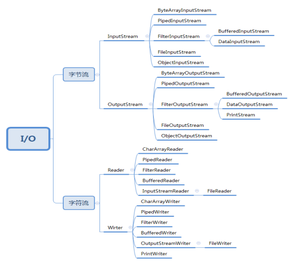
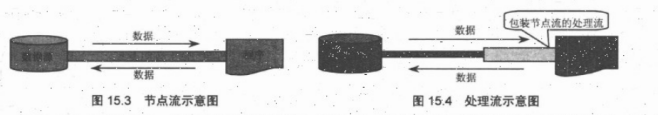
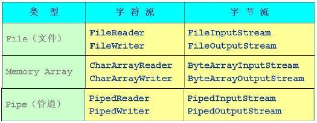
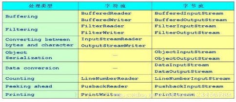
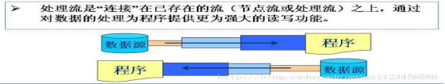
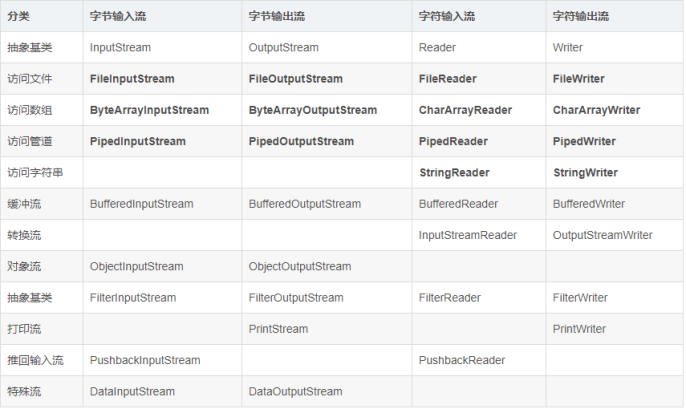

1. IO流的概念
流存在的意义：
而Stream可以1点1点地逐步传输所有数据, 这就是Stream存在的根本意义。想想我们是怎样下载1个大文件的, 下载软件(例如x雷)并不会占用你内存很大的空间, 而只是在内存划分1个缓冲区, 一点一点地下载到自己的内存(缓冲区满了再写到硬盘), 这也是流的1个例子。
java的io是实现输入和输出的基础，可以方便的实现数据的输入和输出操作。在java中把不同的输入/输出源（键盘，文件，网络连接等）抽象表述为“流”(stream)。通过流的形式允许java程序使用相同的方式来访问不同的输入/输出源。stram是从起源（source）到接收的（sink）的有序数据。
Stream是java的1个类, 这个类专门用于程序和外部设备的输入输出(IO). 基本上所有流都在 java.io这个包中.实际上Stream就是数据在程序和外部设备的单向管道, 流的各种方法相当于管道上的各种按钮. 所谓的外部设备可以包括硬盘文件, 网络设备, 另个程序等. 也就是当前程序之外的数据设备
Java将所有传统的流类型都放在Java.io包下，用于实现输入和输出功能。
2. Io 流的分类（详解）
按照流的不同的分类方式，可以把流分为不同的类型，流常见的分类有3种：按照流的流向分、按照操作单元划分、按照流的角色划分
java的输入流主要是InputStream和Reader作为基类，而输出流则是主要由outputStream和Writer作为基类
2.1按照流的流向分：输入流和输出流
输入流： 只能从中读取数据，而不能向其写入数据。
输出流：只能向其写入数据，而不能向其读取数据。
此处的输入,输出涉及一个方向的问题，也就是说，这里的输入，输出都是以程序运行所在的内存为参照点的。
2.2按照操作单元划分：字节流和字符流
字节流主要用于读写二进制文件；字符流主要用于读写文本性文件
字节流和字符流的用法几乎完成全一样，区别在于字节流和字符流所操作的数据单元不同，字节流操作的单元是数据单元是8位的字节，字符流操作的是数据单元为16位的字符。
字节流读取单个字节，字符流读取单个字符（一个字符根据编码的不同，对应的字节也不同，如 UTF-8 编码是 3 个字节，中文编码是 2 个字节。）字节流用来处理二进制文件（图片、MP3、视频文件），字符流用来处理文本文件（可以看做是特殊的二进制文件，使用了某种编码，人可以阅读）。简而言之，字节是个计算机看的，字符才是给人看的。
字节流主要是由InputStream和outPutStream作为基类，而字符流则主要有Reader和Writer作为基类。
字节流和字符流的划分可以看下面这张图。

2.3 按照流的角色：节点流和处理流

可以从/向一个特定的IO设备（如磁盘，网络）读/写数据的流，称为节点流。节点流也被称为低级流。图15.3显示了节点流的示意图。 当使用节点流进行输入和输出时，程序直接连接到实际的数据源，和实际的输入/输出节点连接。
处理流则用于对一个已存在的流进行连接和封装，通过封装后的流来实现数据的读/写功能。处理流也被称为高级流。
2.3.1节点流

File文件流(对文件进行读/写操作)：FileReader、FileWriter、FileInputStream、FileOutputStream
Memory (数组)：从/向内存数组读写数据: CharArrayReader与 CharArrayWriter、ByteArrayInputStream与ByteArrayOutputStream。
Pipe管道流(实现管道的输入和输出(进程间通信)): PipedReader与PipedWriter、PipedInputStream与PipedOutputStream
节点流执行图示：
2.3.2 处理流

Buffering缓冲流：在读入或写出时，对数据进行缓存，以减少I/O的次数：BufferedReader与BufferedWriter、BufferedInputStream与BufferedOutputStream。
Filtering 滤流：在数据进行读或写时进行过滤：FilterReader与FilterWriter、FilterInputStream与FilterOutputStream。
Converting between Bytes and Characters 转换流：按照一定的编码/解码标准将字节流转换为字符流，或进行反向转换（Stream到Reader）：InputStreamReader、OutputStreamWriter。
Object Serialization对象流 (序列化)：ObjectInputStream、ObjectOutputStream。
DataConversion数据流： 按基本数据类型读、写（处理的数据是Java的基本类型（如布尔型，字节，整数和浮点数））：DataInputStream、DataOutputStream 。
Counting计数流：在读入数据时对行记数 ：LineNumberReader、LineNumberInputStream。
Peeking Ahead预读流,(通过缓存机制进行预读)：PushbackReader、PushbackInputStream。
Printing打印流(包含方便的打印方法)：PrintWriter、PrintStream。
处理流的执行图示

2.3.2.1 缓冲流
缓冲流（buffering）是处理流的一种，对I/O进行缓冲是一种常见的性能优化，缓冲流为I/O流增加了内存缓冲区，增加缓冲区的两个目的：
允许Java的I/O一次不只操作一个字符，这样提高整个系统的性能
由于有缓冲区，使得在流上执行skip、mark和reset方法都成为可能
\JAVA中mark()和reset()用法的通俗理解**
\mark就像书签一样，在这个BufferedReader对应的buffer里作个标记，以后再调用reset时就可以再回到这个mark过的地方。mark方法有个参数，通过这个整型参数，你告诉系统，希望在读出这么多个字符之前，这个mark保持有效。读过这么多字符之后，系统可以使mark不再有效，而你不能觉得奇怪或怪罪它。这跟buffer有关，如果你需要很长的距离，那么系统就必须分配很大的buffer来保持你的mark。**
\skip()方法用于跳过前面n个元素，然后再返回新的流**
缓冲流：它是要“套接”在相应的节点流之上，对读写的数据提供了缓冲的功能，
提高了读写的效率，同时增加了一些新的方法。例如：BufferedReader中的readLine方法，
BufferedWriter中的newLine方法。
j2sdk提供了4种缓冲流，重用的构造方法如下:
1 | 1.//字符输入流 |
备注：
缓冲输入流BufferedInputSTream除了支持read和skip方法意外，还支持其父类的mark和reset方法;
BufferedReader提供了一种新的ReadLine方法用于读取一行字符串（以\r或\n分隔）;
BufferedWriter提供了一种新的newLine方法用于写入一个行分隔符;
对于输出的缓冲流，BufferedWriter和BufferedOutputStream，写出的数据会先在内存中缓存，
使用flush方法将会使内存的数据立刻写出。
3.Io 流的分类（图示）
java Io流共涉及40多个类，这些类看上去很杂乱，但实际上很有规则，而且彼此之间存在非常紧密的联系， Java Io流的40多个类都是从如下4个抽象类基类中派生出来的。
- InputStream/Reader: 所有的输入流的基类，前者是字节输入流，后者是字符输入流
- OutputStream/Writer: 所有输出流的基类，前者是字节输出流，后者是字符输出流。
java输入/输出流体系中常用的流的分类表
